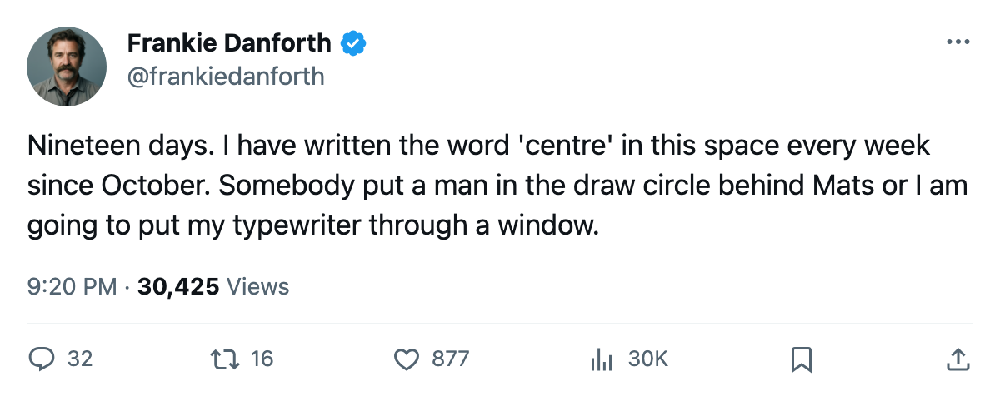
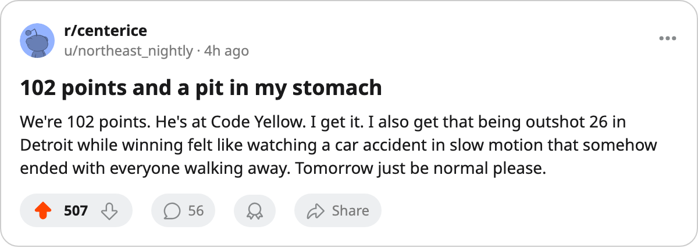

TOR
TOR DET
DETDANFORTH: You put 21 shots on a man's net and steal two points, and I am supposed to smile? 19 days to the deadline
Gaborik is +6 on the Index, the team is 102 points, and the puck belongs to the other club every single night. That does not survive April.
 Frankie DanforthColumnist · Queen City Telegram
Frankie DanforthColumnist · Queen City Telegram
Code Yellow

Twenty-one shots at Detroit. Forty-seven the other way. The scoreboard reads 3-2 and the standings read 102 points and first place by 30 and I am supposed to be happy. I am 44 wins in and the only thing I can see on the sheet is a number that makes my left eye twitch.
The Bureau's Development Index has  Marian Gaborik97 at +6. Top riser in the league. 81 points in 64 games, 20.0 minutes a night. I believe every digit. He is the best thing on this roster right now and I will say so until the morning he is not. But Gaborik is not the problem. Gaborik is the answer to a question nobody behind the bench is asking: who carries the puck into the other end when the shot count is 21 and the opponent controls every clean change?
Marian Gaborik97 at +6. Top riser in the league. 81 points in 64 games, 20.0 minutes a night. I believe every digit. He is the best thing on this roster right now and I will say so until the morning he is not. But Gaborik is not the problem. Gaborik is the answer to a question nobody behind the bench is asking: who carries the puck into the other end when the shot count is 21 and the opponent controls every clean change?
 Mats Sundin90 is 89 overall and 19.6 minutes and 73 points and he has earned the right to hear nothing but praise from me. The winger beside him at centre, the one in the draw circle at 2-on-1s and in the defensive zone, is
Mats Sundin90 is 89 overall and 19.6 minutes and 73 points and he has earned the right to hear nothing but praise from me. The winger beside him at centre, the one in the draw circle at 2-on-1s and in the defensive zone, is  Brad Richards86 with a +4 Index and a power-play right wing slot. Richards is fine. Richards is not a second centre. You know that, I know that, and somewhere in a front office there is a man reading this on a Tuesday morning who knows that too.
Brad Richards86 with a +4 Index and a power-play right wing slot. Richards is fine. Richards is not a second centre. You know that, I know that, and somewhere in a front office there is a man reading this on a Tuesday morning who knows that too.
What Carolina gives you
 Carolina Hurricanes is on a 7-game losing streak. 12-20 on the road. They have 12 overtime losses, the most in the league, which means they survive on close games and a goalie who stays upright until the third period. They beat us once and lost once and outscored us 7-5 in the pair. Tuesday is a chance to make it 2-1 and put the goal differential right.
Carolina Hurricanes is on a 7-game losing streak. 12-20 on the road. They have 12 overtime losses, the most in the league, which means they survive on close games and a goalie who stays upright until the third period. They beat us once and lost once and outscored us 7-5 in the pair. Tuesday is a chance to make it 2-1 and put the goal differential right.
Win it. Obviously win it. That is not the point.
The point is what happens when the opponent on a Tuesday in March is  New Jersey Devils or
New Jersey Devils or  Tampa Bay Lightning or whoever you face in the second round, and they double your shot count, and your goaltender is 39 years old.
Tampa Bay Lightning or whoever you face in the second round, and they double your shot count, and your goaltender is 39 years old.  Ed Belfour93 has been fine. 24 games, 58.3 minutes a night. I want him in there. I also want him not facing 47 shots in a game where the only reason the Wings didn't get a fourth is a bounce off a skate in the second period that the sheet doesn't record.
Ed Belfour93 has been fine. 24 games, 58.3 minutes a night. I want him in there. I also want him not facing 47 shots in a game where the only reason the Wings didn't get a fourth is a bounce off a skate in the second period that the sheet doesn't record.
Nineteen days. That is what the calendar says for the trade deadline. Toronto has 311 for, 160 against, and the best goal differential in the league. The shot gap is the thing that goal differential does not show. You can win 44 games outshooting nobody. You cannot win four rounds that way. Every playoff series I have watched this club lose, the other team touched the puck more. That is the sheet.
THE PANIC METER: Code Yellow
I am not panicking. 102 points. Gaborik at +6. Klesla and Nash both at +5. The kids are coming. Chlup has 38 points at 19 and he is on my fourth line, which is the thing that would make a sane person furious.
But the deadline is coming and the centre behind Sundin is still the name on the whiteboard that nobody has erased. 19 days. I will write this sentence again in 18 days and the one after that until a man walks into the building with a faceoff percentage worth trusting, or until I am dead, whichever comes first.
Win Tuesday. Then worry.

